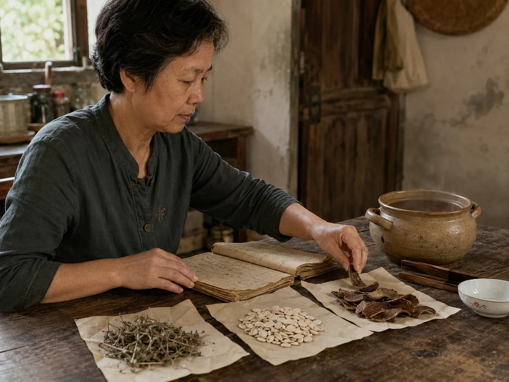

Xiangru Drink from an Old Summer Formula
Across the landing, my neighbor separated dried xiangru, white hyacinth beans, and magnolia bark before setting an earthen pot by her notebook.

Three ingredients on folded paper
The woman across the landing kept a stitched notebook beneath a stack of clean bowls. One late-summer afternoon, she opened it on the table and placed three folded papers along the lower edge. I watched her separate twiggy dried xiangru, flat white hyacinth beans, and curled pieces of dark magnolia bark. The room smelled faintly green and woody before anything entered the water.
Each ingredient made a different sound beneath her fingers. The beans clicked against the table, the bark scraped the paper, and the thin xiangru stems caught against one another. She brought the papers close to the earthen pot without mixing them into one heap.
A formula from the Song
Her copy named an old three-ingredient xiangru formula recorded in the Song dynasty collection known as the Taiping Huimin Hejiju Fang. She read the line once, closed the notebook away from the steam, and returned to the pot. In her kitchen, the old name belonged to one particular summer preparation rather than every fragrant drink.
Winter-melon tea began with a dark preserved slab, while barley water began with a familiar grain measured for an ordinary household pot. The xiangru drink kept three distinct materials together because the written formula, not an available leftover, had placed them there.
Steam above the earthen pot
She tipped the beans and bark in first, then added the lighter stems after the water had begun to move. Their dry smells changed in the steam: woody near the rim and sharper when she lifted the lid. I stayed on the other side of the table while she lowered the flame and wiped moisture from the notebook cover.
When the liquid had darkened, she poured it through a small bamboo strainer. The white beans, brown bark, and tangled stems landed together on a porcelain dish, and she left the wooden spoon across the warm pot.